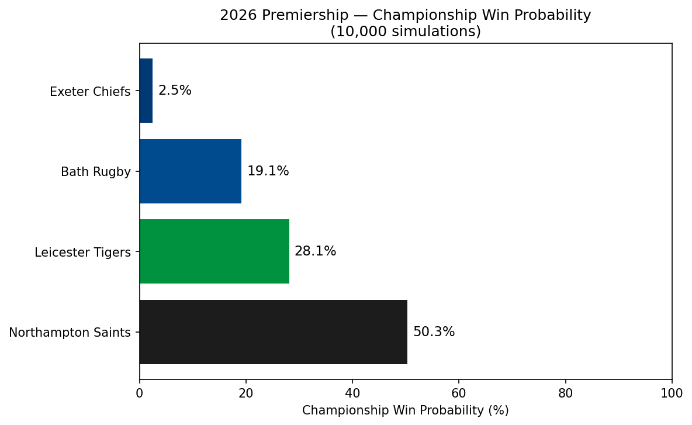
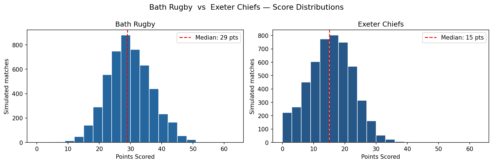
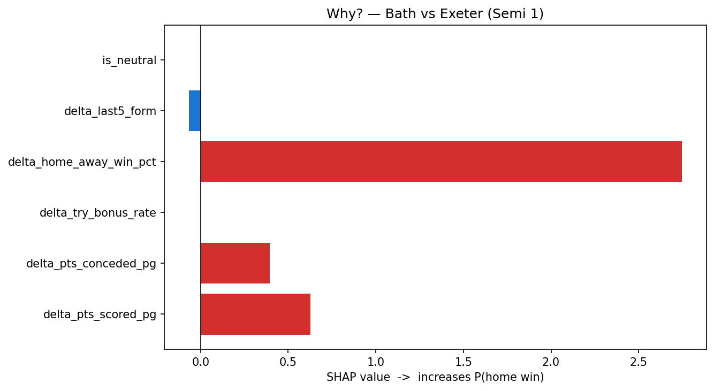
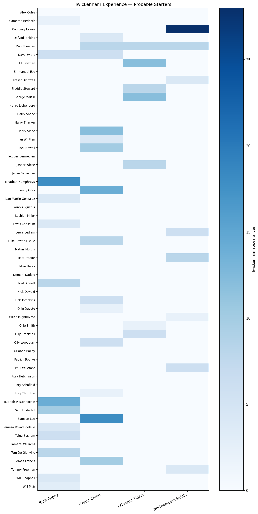

XGBoost + 10,000 Monte Carlo simulations — generated 2026-06-09




Model trained on 71 Gallagher Premiership matches (2020–25) via TheSportsDB. High CV accuracy (0.957) reflects small training set — treat probabilities as directional, not precise.